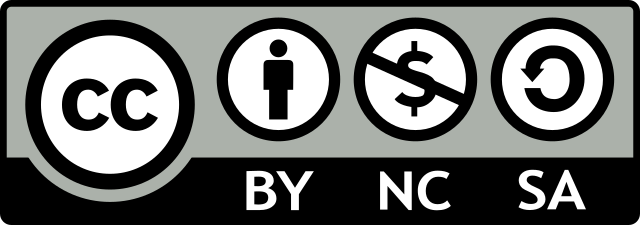

IconQA
IconQA
A New Benchmark for
Abstract Diagram Understanding and
Visual Language Reasoning
Current visual question answering (VQA) tasks mainly consider answering human-annotated questions for natural images in the daily-life context. In this work, we propose a new challenging benchmark, icon question answering (IconQA), which aims to highlight the importance of abstract diagram understanding and comprehensive cognitive reasoning in real-world diagram word problems. For this benchmark, we build up a large-scale IconQA dataset that consists of three sub-tasks: multi-image-choice, multi-text-choice, and filling-in-the-blank. Compared to existing VQA benchmarks, IconQA requires not only perception skills like object recognition and text understanding, but also diverse cognitive reasoning skills, such as geometric reasoning, commonsense reasoning, and arithmetic reasoning.
IconQA provides diverse visual question answering questions that require:
There are three different sub-tasks in IconQA:
The IconQA dataset can be accessed here.
| Tasks | Train | Validation | Test | Total |
|---|---|---|---|---|
| Multi-image-choice | 34,603 | 11,535 | 11,535 | 57,672 |
| Multi-text-choice | 18,946 | 6,316 | 6,316 | 31,578 |
| Multi-image-choice | 10,913 | 3,638 | 3,638 | 18,189 |
In adition to IconQA, we also present Icon645, a dataset of icons for training abstract image classifiers
Check out the dataset here.
Our dataset is distributed under the CC BY-NC-SA (Attribution-NonCommercial-ShareAlike) license, which allows anyone to use our dataset for free under the following terms:
If you agree with the terms listed above, you can access the IconQA and the Icon645 dataset here.

@inproceedings{lu2021iconqa,
title = {IconQA: A New Dataset for Abstract Diagram Understanding and Visual Language Reasoning},
author = {Lu, Pan and Qiu, Liang and Chen, Jiaqi and Xia, Tony and Zhao, Yizhou and Zhang, Wei and Yu, Zhou and Liang, Xiaodan and Zhu, Song-Chun},
booktitle = {Submitted to the 35th Conference on Neural Information Processing Systems (NeurIPS 2021) Track on Datasets and Benchmarks},
year = {2021}
}